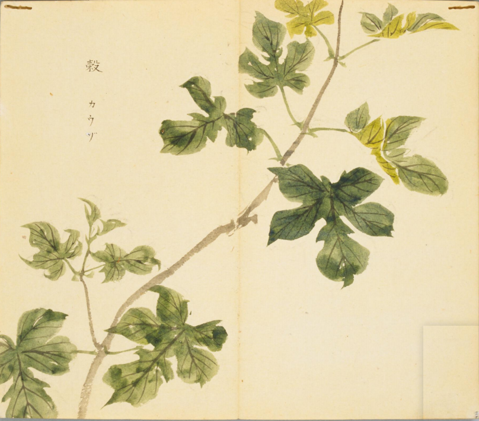
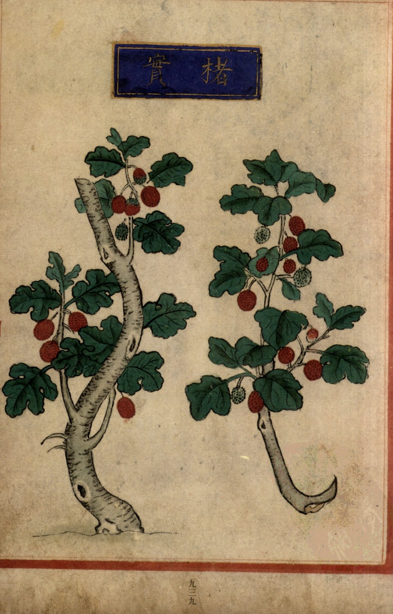
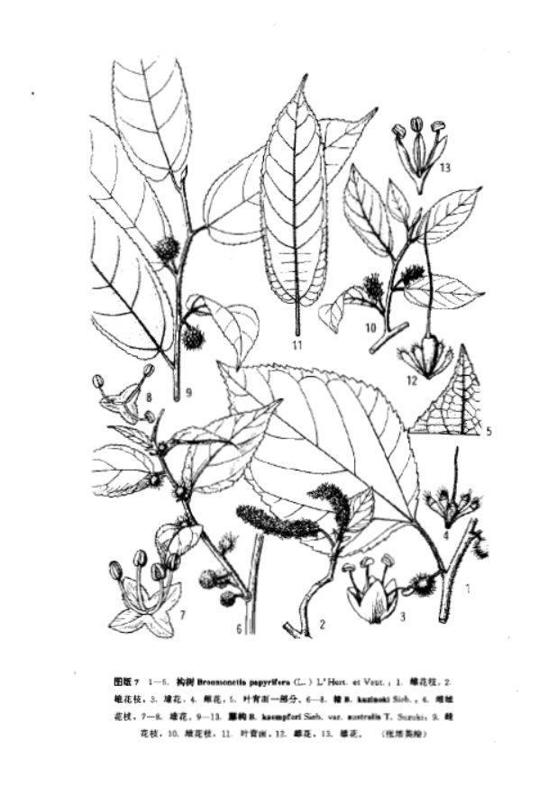

出现篇目
别名
楮、榖桑
古代记载
《毛诗草木鸟兽虫鱼疏》
谷，幽州人谓之谷桑，或曰楮桑，荆扬、交广谓之谷，中州人谓之楮殷，中宗时桑谷共生是也。今江南人绩其皮以为布，又捣以为纸，谓之谷皮纸，长数丈，洁白光辉，其里甚好，其叶初生可以为茹。
《本草纲目》
《别录》曰∶楮实生少室山，所在有之。八月、九月采实。
弘景曰∶此即今构树也。南人呼 纸亦为楮纸。武陵人作榖皮衣，甚坚好。
颂曰∶此有二种∶一种皮有斑花纹，谓之斑榖，今人用皮为冠者；一种皮白无花，枝叶大相类。但取其叶似葡萄叶作瓣而有子者为佳。其实初夏生，大如弹丸，青绿色，至六、七月渐深红色，乃成熟。八、九月采，水浸去皮、穣，取中子。段成式《酉阳杂俎》云∶谷田久废必生构。叶有瓣曰楮，无曰构。陆氏《诗疏》云∶江南人绩其皮以为布。又捣以为纸，长数丈，光泽甚好。又食其嫩芽，以当菜茹。今楮纸用之最博，楮布不见有之。医方但贵楮实，余亦稀用。
大明曰∶皮斑者是楮，皮白者是榖。
时珍曰∶按∶许慎《说文》言楮、 乃一种也，不必分别，惟辨雌雄耳。雄者皮斑而叶无丫叉，三月开花成长穗，如柳花状，不结实，歉年人采花食之。雌者皮白而叶有丫叉，亦开碎花，结实如杨梅，半熟时水澡去子，蜜煎作果食。二种树并易生，叶多涩毛。南人剥皮捣煮造纸，亦缉练为布，不坚易朽。裴渊《广州记》言∶蛮夷取 皮熟捶为揭里罽布，以拟毡，甚暖也。其木腐后生菌耳，味甚佳好。
当代记载 《中国植物志》
"构树 （Broussonetia papyrifera ），桑科 ，构属植物。乔木，高10-20米；树皮暗灰色；小枝密生柔毛。叶螺旋状排列，广卵形至长椭圆状卵形，长6-18厘米，宽5-9厘米，先端渐尖，基部心形，两侧常不相等，边缘具粗锯齿，不分裂或3-5裂，小树之叶常有明显分裂，表面粗糙，疏生糙毛，背面密被绒毛，基生叶脉三出，侧脉6-7对；叶柄长2.5-8厘米，密被糙毛；托叶大，卵形，狭渐尖，长1.5-2厘米，宽0.8-1厘米。花雌雄异株；雄花序为柔荑花序，粗壮，长3-8厘米，苞片披针形，被毛，花被4裂，裂片三角状卵形，被毛，雄蕊4，花药近球形，退化雌蕊小；雌花序球形头状，苞片棍棒状，顶端被毛，花被管状，顶端与花柱紧贴，子房卵圆形，柱头线形，被毛。聚花果直径1.5-3厘米，成熟时橙红色，肉质；瘦果具与等长的柄，表面有小瘤，龙骨双层，外果皮壳质。花期4-5月，果期6-7月。产我国南北各地。锡金、缅甸、泰国、越南、马来西亚、日本、朝鲜也有，野生或 栽培。本种韧皮纤维可作造纸材料，楮实子及根、皮可供药用。"

<细井徇>

<补遗雷公炮制便览>

<中国植物志>